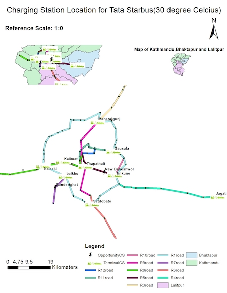
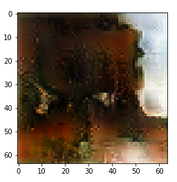

Projects and Research
1) A model for locating optimized location for EV charging station for public transport network inside Kathmandu valley.
Development of our model is related to the policy that Nepal government is planning to implement to control the energy crisis. The utilization of this model can be done in Kathmandu valley when we shift our major source of public transportation from traditional fossil fuel vehicles to Electric vehicles. The optimized location model fulfils the demand of all the electric bus at minimum cost. Various alternatives that can be selected for charging facilities are:

The optimized location for charging stations obtained from our result can be used to create a managed system for EV charging station in various routes of the Kathmandu valley. Based on the calculation and modeling of our project we can reduce the long queue for charging further increasing the QoS.

Our project is only based on the placement of the charging stations in the valley but after the successful completion of it, we can expand our research for the highway routes also for the proper management of the vehicles in the long routes. Hence, the trend of EV in Nepal can bring a massive change in the energy sector of our country.

2. Study of the Nepal Stock Exchange Limited
The minor-research project was conducted online in order to optimize the investment for a private investor in the Nepal Stock Exchange (NEPSE) for short-term trading and to evaluate the returns after 15 days. The study evaluated 20 different companies, with five companies each coming from the hydropower, banking, and microfinance sectors, and the remaining five coming from various sectors. The data for the study was obtained from the official NEPSE website. The goal of the optimization was to select at least four companies for investment, with one coming from each of the banking, microfinance, and hydropower sectors, and the final one coming from other categories. This optimization was done using MS-Excel's solver with a limited sum of money (Rs. 10 lakh). Data from 25 trading days (from 2021-07-01 to 2021-08-05) was also used to forecast the closing price for the next 15 days, using the Crystal Ball Predictor. Crystal Ball simulations were also conducted to assess the risk and certainty of not losing money by investing in different companies.

3. Optimization for EV Charging Station for Kathmandu
This research is being done under supervision of Dr Khem Gyawali, Campus Chief of Thapathali Campus. This research is being done under the umberella of energy laboratory of Thapathali Campus. The research studies the electric bus choices and the optimization of the placements of charging stations inside Kathmandu valley. My responsibility in this research is more in programming and optimization using python. We are working on developing and solving the optimization problem in python. I am working on data analysis and visualization and in linear porgramming.

4. Machine Translation
Machine translation is the process of translation of a language using deep learning models. This project made use of transformers to process the language and the model was trained in google colab with the dataset already available under the apache license. This project has been done from end to end in Tensorflow examples. I did this project for German to English Translation.
5. Chatbot
This project is a minor project which was done to understand the working process of chatbots. The chatbot had a specific set of replies it could give and specific set of questions it could take. A more complex chatbot based on GANs was the ambition but the computational resources seemed extremely high. I do have intentions to work on this in the future.
5. Ancient Painting generation using GAN
In this project , I trained a deep learning model to generate paintings of ancient themes. The dataset available was once again available for free with apache license. This project helped me to learn and execute a GAN on my own. The model is not fine tuned and the results generated by this GAN is fascinating.
